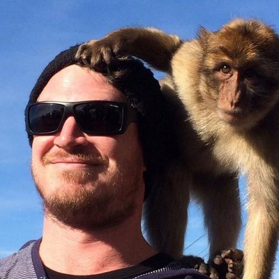
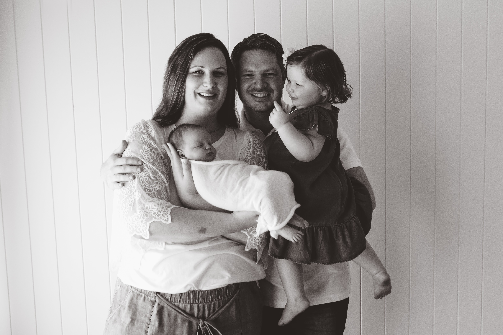

Balancing life and study
Jason Meyer ![]()

Jason is a HDS Masters graduate from 2022. He has spent the last 10+ working in ICU as a registered nurse in both clinical and research roles. Most recently he has starting working for DonateLife Queensland as the Data and Audit Clinical Nurse Consultant. Jason is passionate about using data to represent the truth and inform clinical decision making.]
How it started
I embarked on the journey of completing my Masters in Health Data Science in late 2018. I had been mulling over the idea of post grad study for a while at that point but had not seen anything that really took my interest. I think I might have actually seen an add for this degree on Facebook and decided to take closer look. The appeal for me was the mix of data science with a clinical skew that would have application in my current work.
I put in an application and was successful to start in the first term of 2019. At the time I was a full fee paying student (via HECS). I decided I would just do one subject per term to make sure I could manage the workload without impacting the rest of family too much.
Managing Obstacles
Time
I was fortunate enough that I was able to negotiate flexible working hours which allowed me to work a full-time load over 4 days which left me the Friday every week to study. Thanks to the technological aspirations of the course, pretty much all the content was available online and there was only a few subject I missed the tutes for which I made up for by engaging online.
Week to week I would work through what I could during the evenings when I had free time and then finish things off on the Friday. Some weeks I would have the Friday free to attend to other duties because I already had experience in the course content for that week. Then I would generally spend extra time on the weekends to get on top of assignment deadlines.
At the start of each term I would map out the course deadlines on my calendar. I would make a plan for spending extra time on the assignments (I always used it). The week to week work was generally okay but if it was heavy and you got an assignment on top, it made it more difficult to keep on top. I always prioritised work that would give marks.
I will say that my wife was amazing through the whole degree even though she definitely got frustrated at times. It can be difficult to balance the time commitments of study, work and family life. I would not recommend undertaking them without the full support of your significant other (if that is your situation).

Family
In 2020, we had a second child join us. We called him our COVID baby. This period was initially very agreeable to studying as pretty well everyone had to stay at home. I was considered frontline staff so still had to go to work but my wife was on maternity leave. All the course content was already online. It was just a case of continuing the practices I had started in 2019.
In 2021, restrictions were lifted and things started to open up more. My wife went back to work three days a week. Both kids were in day care four days a week. We still managed to work things so that both my wife and I had a day at home each without the kids. For me it was largely to study, for my wife it was to get a break and catch up on things.
Expenses
The cost of a Masters can be prohibitive. I had a requirement through my employer to be working towards a higher degree so there was incentive to maintain studies based on that. However, after paying $3,500+ per subject we were beginning to feel the pinch. There were no Commonwealth Supported Places (CSP) when I had originally applied however, I had been keeping in touch with the Program Director (Sabita then Andrew) to see if there were any opportunities. Towards the end of 2020 the federal government had announced additional funding for STEM placements but I found out that they were only going to apply to new applicants. So at the end of 2020 I withdrew from my Masters and reapplied to commence in Term 1 2021. My gamble for securing a CSP paid off. My course fees went from around $4,000 to around $900!
Lessons
At the end of 2022, I completed my dissertation with a high distinction and had a weighted average mark of 90% for my entire Masters degree. To say I was chuffed would be an understatement.
Writing out what I’ve been through for this blog makes it sound like it was actually a pretty straightforward thing to do. I haven’t gone into the depths of how we also moved house twice, sold a house, bought a house, changed the kids to different day care centres, plus managing all the routine day-to-day life things that get thrown at you. Not to mention work deadlines that come up as well! These are all the small things that suck up your time, often at critical moments because they are largely unplanned.
What did I do to ensure that I was successful?
Made sure my wife was on board
Gave myself a solid chunk of flexible time
Attempted to use up other spare time before I got to my allocated time (if things were under control when I got to my allocated time then it could be used as free time or time for doing other things)
Negotiated additional time requirements with my wife when needed (usually for assignments)
Prioritised work that gave marks
One other thing that I think is important in a situation like this. If you aren’t in a position where you are relying on others to accomplish things then it doesn’t matter as much but I very much was. It was important to me that the time I was spending on study was not wasted. I felt a strong obligation to succeed in all the courses because I did not want the time I was taking away to be wasted.